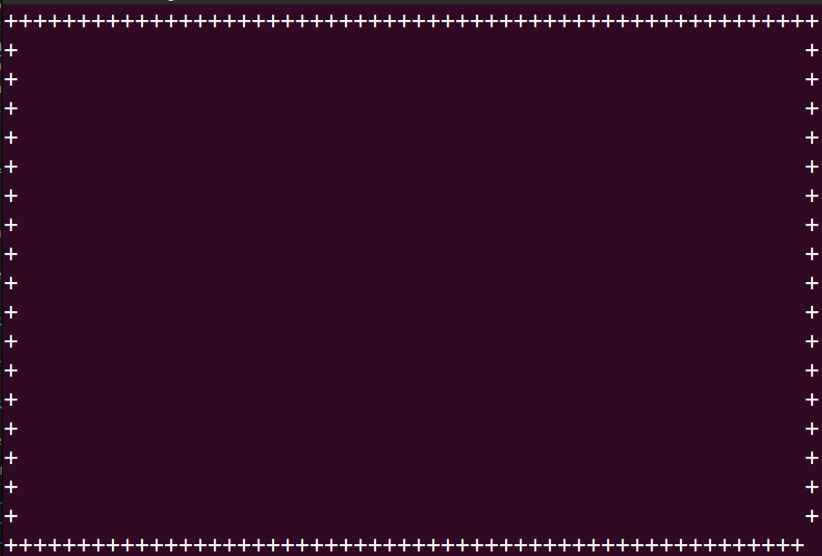
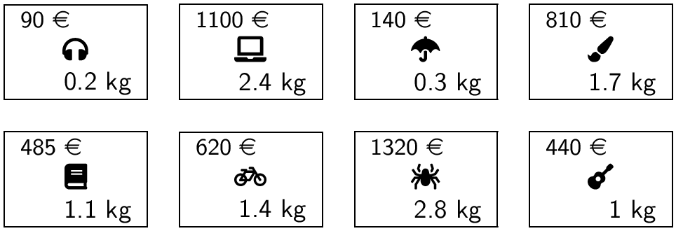

C7 Algorithmes gloutons ¶
Cours¶
Attention
Ce diaporama ne vous donne que quelques points de repères lors de vos révisions. Il devrait être complété par la relecture attentive de vos propres notes de cours et par une révision approfondie des exercices.
Travaux pratiques¶
 Exercice 1 : Révision : Un serpent dans le terminal¶
Exercice 1 : Révision : Un serpent dans le terminal¶

Vous avez peut-être reconnu sur la capture d'écran ci-dessus une version minimaliste d'un célèbre jeu vidéo : snake, dans lequel le joueur dirige un serpent qui doit, sans entrer en collision contre lui-même ou contre les bords de l'écran, atteindre le plus possible de nourriture (@ dans l'image ci-dessus). Chaque nourriture consommée accroît la taille du serpent ainsi que sa vitesse. Une version jouable en ligne est disponible ici.
Le but du TP est d'écrire, une version de ce jeu. L'interface graphique sera simplement le terminal et nous nous limiterons à l'affichage des caractères ascii standards. Pour cela nous allons transformer le terminal en interface graphique dans laquelle on peut afficher afficher n'importe quel caractère à la ligne et à la colonne donnée. On pourra définir les caractères utilisés dans le jeu à l'aide de variables globales en début de programme, par exemple dans la capture d'écran ci-dessus :
-
A propos de l'interface graphique
Dans la fonction
Nous allons utiliser le module curses qui permet d'afficher des caractères dans le terminal en donnant simplement leur coordonnées. On doit donc écrire en début de programmeimport curses. Afin d'utiliser correctement cette interface graphique, on doit définir une fonctionsnakepuis l'appeler avec les deux instructions suivantes :snakeles premières instructions ci-dessous initialisent le terminal et récupère sa taille :Une fois cette initialisation effectuée, on peut afficher n'importe quel caractère ascii dans le terminal en utilisant la fonctiondef snake(terminal): #Initialiser l'écran curses.cbreak() # Désactiver la bufferisation de ligne curses.curs_set(0) # Cacher le curseur curses.noecho() # Ne pas afficher les touches tapées terminal.nodelay(1) # Rendre getch() non-bloquant terminal.keypad(True) # Accès aux touches spéciales terminal.clear() # vide le terminal # Récupérer les dimensions du terminal maxl, maxc = terminal.getmaxyx() maxl = maxl-1 # pour que maxl contienne le numéro de la dernière ligne maxc = maxc - 1 # idem pour maxcterminal.addchqui prend en argument la ligne, la colonne et enfin le caractère affiché. Par exempleterminal.addch(5, 7, 'X')affiche unXà la ligne 5 et à la colonne 7. Le coin supérieur gauche du terminal est l'origine (ligne 0, colonne 0). Enfin, les modifications apportées au terminal sont bufferisées (mises en attente), la fonctionterminal.refresh()permet de mettre à jour un terminal en executant toutes les modifications en attente.-
Pour vérifier que tout fonctionne correctement, ajouter à la fonction
snakeles instructions permettant d'afficher unXau centre du terminal. Puis utiliser la fonctionsleepdu moduletimequi permet d'attendre le nombre de secondes donné en argument(à importer en début de programme) afin de visualiser le résultat. -
Ecrire la fonction
make_borderqui prend en argumentmaxletmaxcet qui dessine une bordure autour du terminal (dans la capture d'écran donnée en exemple au début du TP cette bordure est constituée de caractères+).Aide
On notera bien que la fonction
terminal.addch:- prends comme premier argument la ligne et comme second la colonne
- que le coin supérieur gauche est le point de coordonnées \((0,0)\).
- on doit utiliser
refresh()pour visualiser les modifications apportées au terminal.
-
Compléter la fonction
snakeen appelant la fonctionmake_borderet ajouter un temps d'attente afin de visualiser le résultat. Vous devriez obtenir un résultat similaire à la capture d'écran suivante : 
-
-
Représentation interne du serpent
On décide de stocker dans une liste de Python les positions occupées par le serpent, le premier élément de cette liste est la position de la queue du serpent et le dernier élément est la tête du serpent. Par exemple la liste[(3,1), (3,2), (3,3), (3,4), (3,5)]représente un serpent dont la tête est située en ligne 3 et colonne 5 et la queue en ligne 3 colonne 1.-
Ecrire une fonction
init_snakequi prend en argumentmaxl,maxcet un entiersizeet qui renvoie la liste des positions occupées par un serpent horizontal, centrée au milieu de l'écran. Cette fonction doit aussi mettre à jour le terminal afin d'y afficher le serpent. On notera bien que la tête du serpent est représenté par un caractère différent du reste. -
Appeler cette fonction depuis la fonction
snakeafin de faire afficher le serpent dans sa position de départ.
-
-
Génération aléatoire de nourriture
On rappelle que la fonctionrandintpermet de générer en entier aléatoire entre les deux bornes (incluses) données en argument. Lorsqu'on génère une position pour la nourriture elle ne doit pas être dans le serpent. On doit donc disposer d'une fonction qui teste si un couple de coordonnées(l,c)fait partie ou non des positions occupées par le serpent.-
Ecrire une fonction
in_list(x, lst)qui renvoieTruesixest danslstetFalsesinon. -
En utilisant
in_list, écrire une fonction de signaturemake_food(pos_snake, maxl,maxc)oùpos_nakeest la liste des positions occupées par le serpent etmaxl,maxcles dimensions du terminal qui renvoie un tuple de coordonnées(fl,fc)contenant les lignes et colonnes de la nourriture. Cette fonction mettra aussi à jour le terminal à l'aide determinal.addch. -
Tester votre fonction en appelant la fonction de génération de nourriture depuis le
main.
-
-
Déplacement du serpent
On initialise dans la fonctionsnakeune variabledir_snakequi contiendra un entier indiquant la direction dans laquelle avance le serpent. On pourra définir des variables globales en début de programme afin d'utiliser de façon "transparente" ces entiers :RIGHT, UP, LEFT, DOWN = 0, 1, 2, 3. Le serpent étant initialement horizontal avec la tête dirigée vers la droite on écriradir_snake = RIGHT.-
Un déplacement du serpent peut générer une collision (avec lui-même ou les bordures), ou un augmentation de sa taille (s'il atteint la nourriture). Ecrire une fonction
!#python move_snake(pos_snake, dir_snake, maxl, maxc, fl, fc)qui déplace le serpent et renvoie un entier indiquant si le serpent est entré en collision ou s'il doit grandir. On pourra définir ces entiers par des variables globales en début de programme :Aide
On pourra :
- déterminer la prochaine position de la tête du serpent en utilisant la position précédente et la direction
- si cette position est hors de l'écran ou se trouve dans le serpent alors renvoyer immédiatement
COLLISION - sinon ajouter cette position à la liste des positions occupées par le serpent et supprimer la queue tout en mettant à jour l'affichage du terminal
- renvoyer
GROWsi la nouvelle position est celle de la nourriture
-
Tester votre fonction en modifiant la fonction
snakeet en effectuant quelques déplacements éventuellement en modifiant la direction du serpent
-
-
Boucle principal du jeu
On pourra partir du squelette suivant afin d'écrire dans la fonction
snakela boucle principal du jeu:while (running): sleep(delay) event = move_snake(pos_snake,dir_snake, maxl, maxc, fl, fc) #déplacer le serpent if event==GROW: #nourriture consommée fl,fc = make_food(maxl,maxc,pos_snake) #recrée la nourriture delay = 0.9 * delay #augmente la vitesse du jeu if event==COLLISION: #collision > fin du jeu running = False kpress = terminal.getch() #récupère la touche pressée if (kpress == curses.KEY_UP): #modifie en conséquence la direction dir_snake = UP elif (kpress == curses.KEY_DOWN): dir_snake = DOWN .... -
Améliorations possibles
- Faire afficher un score
- Enregistrer dans un fichier les meilleures performances
- Utiliser de la couleur
- Introduire des caractères spéciaux ou des emojis comme
 pour la nourriture
pour la nourriture - Modifier le jeu en introduisant des bonus ou des malus, ...
Exercice 2 : Implémentation du rendu de monnaie en Python¶
Le but de l'exercice est de compléter une fonction rendu écrite en Python qui implémente l'algorithme glouton pour le problème du rendu de monnaie. La fonction prend en argument :
- un flottant
sommequi est la somme à rendre - une liste
valeurscontenant la somme des valeurs du système monétaire utilisé qu'on suppose déjà triée par ordre décroissant
Et elle doit renvoyer comme résultat une liste contenant les pièces à utiliser. On renvoie une liste vide lorsque l'algorithme échoue à trouver une solution. On rappelle que la stratégie gloutonne pour ce problème consiste à rendre à chaque étape la pièce de plus forte valeur possible.
-
Questions préliminaires
a. Que doit renvoyer
rendu(18,[15,10,5,2,1])? Quelle est la solution optimale à ce problème ?b. Que doit renvoyer
rendu(17,[10,9,8,3])? Quelle est la solution optimale à ce problème ? -
Recopier et compléter le code de la fonction ci-dessous :
-
Quel est le rôle du test
somme==0en ligne 16 ? Que renverrait cette fonction pour le problème de la question 1.b) si on supprime entièrement ce test (lignes 16 à 19) et qu'on le remplace parreturn solution? -
Tester cette fonction sur les exemples de l'exercice 1.
Exercice 3 : Problème du sac à dos¶
Le but de l'exercice est d'implémenter la stratégie gloutonne afin de résoudre le problème du sac à dos. On prend comme exemple un sac ayant un poids maximal de 4kg et les objets suivants :

-
On représente un objet par un
tupleen Python(valeur,poids), par exemple les écouteurs sont représentés par le tuple(90, 0.2). Créer la listeobjetsen python contenant les 8 tuples représentant chacun des 8 objets ci-dessus. -
On rappelle que la première étape de la stratégie gloutonne est de classer les objets en utilisant un critère pertinent, par exemple le rapport
valeur/poids. Ecrire une fonctionrapportqui prend en argument unobjet(donc un tuple) et renvoie le rapportvaleur/poidsde cet objet.Aide
Pour récupérer la valeur et le poids d'un objet représenté par un tuple, on peut décompacter le tuple :
valeur, poids = objet -
En utilisant
sortedécrire une fonctiontrie_objetsqui prend en argument une liste d'objets et renvoie cette liste triée par ordre décroissant du rapport valeur/poids.Aide
- le paramètre
reverseàTruepermet d'obtenir l'ordre décroissant. - le paramètre
keypermet de donner la clé de tri (c'est la fonctionrapportde la question précédente).
- le paramètre
-
Ecrire la fonction
gloutonqui prend en argument une liste d'objets et un poids maximal et renvoie la valeur obtenue pour le sac. Tester votre fonction sur l'exemple donné en introduction et vérifier votre résultat :
-
Modifier la fonction précédente afin qu'elle renvoie aussi le contenu du sac.
Exercice 4 : Somme maximale dans une matrice carrée¶
On considère une matrice carrée de taille \(n\times n\), \(M_{i,j}\) (\(0 \leqslant i \leqslant n-1\) et \(0 \leqslant j \leqslant n-1\)) à coefficients entiers et on s'intéresse aux chemins depuis la première valeur en haut à gauche (\(M_{0,0}\)) jusqu'à la dernière en bas et à droite (\(M_{n-1,n-1}\)) qui n'utilisent que les déplacements vers la droite (\(\rightarrow\)) ou vers le bas (\(\downarrow\)). Et on cherche à déterminer la somme obtenue si on se déplace avec une stratégie gloutonne. Par exemple, dans la matrice suivante :
\(\left(\begin{matrix} 1 & 3 & 2 & 4 \\ 5 & 6 & 1 & 2 \\ 7 & 8 & 9 & 1 \\ 4 & 2 & 3 & 5 \end{matrix}\right)\)
La stratégie gloutonne donnera le chemin suivant en rouge et une somme de 38.
\(\left(\begin{matrix} \textcolor{red}{1} & 3 & 2 & 4 \\ \textcolor{red}{5} & 6 & 1 & 2 \\ \textcolor{red}{7} & \textcolor{red}{8} & \textcolor{red}{9} & 1 \\ 4 & 2 & \textcolor{red}{3} & \textcolor{red}{5} \end{matrix}\right)\)
En cas d'égalité entre les choix, on choisit (arbitrairement) d'aller vers la droite (\(\rightarrow\)).
-
En donnant un exemple montrer que la stratégie gloutonne ne donne pas toujours la somme optimale.
-
Ecrire une fonction
gloutonqui renvoie la somme obtenue la stratégie gloutonneAide
Utiliser deux variables
ligneetcolonnequi indique la position courante dans la matrice :ligneetcolonnesont initialisées à 0 car on démarre depuis le coin supérieur gauche- on choisit d'augmenter
ligneoucolonneen comparant les valeurs se trouvant dans ces deux directions, attention cela n'est possible que si on a pas encore atteint la dernière ligne et la dernière colonne. - on se déplace tant qu'on a pas atteint la dernière position en bas et à droite
-
Tester votre fonction sur l'exemple suivant et vérifier votre résultat :
exemple = [ [11, 19, 12, 2, 18, 18, 2, 9, 12, 17] [17, 14, 12, 10, 7, 18, 12, 5, 11, 7] [ 4, 8, 2, 12, 2, 17, 16, 13, 1, 6] [13, 8, 20, 10, 3, 12, 17, 12, 12, 9] [ 8, 3, 14, 17, 16, 10, 13, 10, 5, 20] [ 9, 13, 17, 9, 10, 1, 11, 19, 20, 19] [ 1, 6, 18, 15, 10, 2, 7, 9, 4, 20] [ 3, 8, 17, 18, 20, 19, 16, 8, 2, 14] [19, 17, 18, 9, 20, 15, 6, 5, 16, 3] [13, 14, 14, 9, 16, 8, 17, 15, 9, 11] ] -
Modifier votre fonction afin qu'elle renvoie aussi le parcours dans la matrice sous la forme d'une liste de 0 (pour indiquer un déplacement à droite) et de 1 (pour indiquer un déplacement en bas).
Exercice 5 : Choix d'activités¶
On considère \(n\) activités \(A_i\) (\(i \leqslant i \leqslant n-1\)) ayant chacune une heure de début (\(d_i\)) et une heure de fin (\(f_i\)). Par exemple :
- \(A_0 = (3,5)\) signifie que l'activité 0 commence à 3 heures et se termine à 5h
- \(A_1 = (4,8)\) et donc \(A_1\) est incompatible avec \(A_0\) puisque leurs plages horaires respectives se chevauchent
- \(A_2 = (6,7)\)
- \(A_3 = (1,2)\)
Le but de l'exercice est de mettre en place une stratégie gloutonne sur ce problème, le choix local est de prendre l'activité qui se termine le plus tôt. Dans l'exemple ci-dessus, on classerait les activité par heure de fin croissante :
[(1, 2), (3,5), (6,7), (4,8)] et donc on pourrait prendre les activités \(A_3\), \(A_0\) et \(A_2\).
-
Mettre en oeuvre cette stratégie en Python en écrivant une fonction
choix_activitesqui prend en argument une liste d'activités (données sous la forme de tuple(debut,fin)) et renvoie le nombre d'activités obtenu en suivant la stratégie gloutonne -
Modifier la fonction précédente afin qu'elle renvoie la liste des activités à choisir.